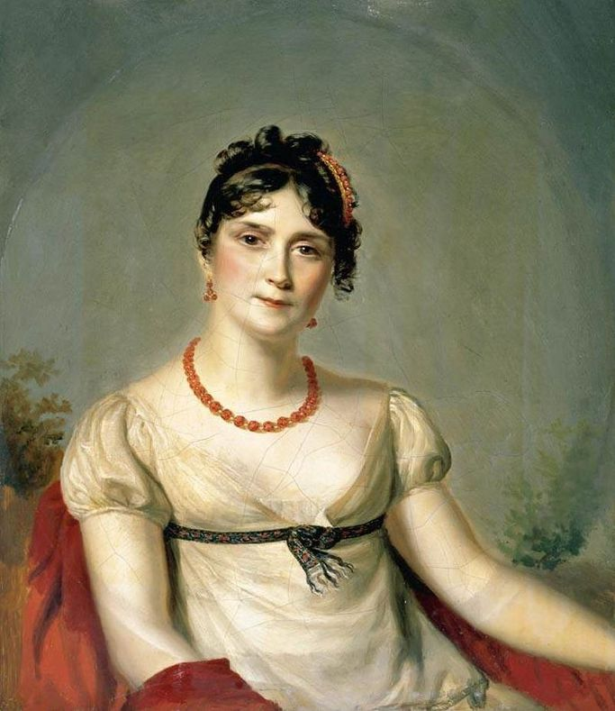
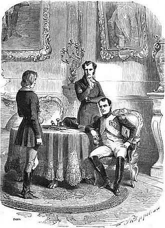
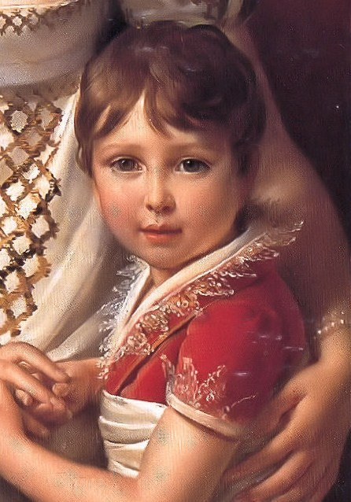

사랑과 이별 - 조세핀과의 이혼
게시: 2017-12-10T22:11:37+09:00
오스트리아와의 피비린내 나는 전쟁을 승리로 이끌고 파리로 돌아온 나폴레옹을 기다리는 것은 아스페른-에슬링보다 더 힘든 싸움이었습니다. 그리고 이건 나폴레옹 본인이 시작한 싸움이었습니다. 바로 이혼이었지요.
보통 남자였다면 나폴레옹이 조세핀과 이혼할 이유는 충분했습니다. 조세핀은 결코 이상적인 배우자가 아니었습니다. 황후에 걸맞은 품위와 교양 대신 허세와 낭비가 심했고, 결정적으로 나폴레옹이 목숨을 걸고 전쟁을 하는 동안 젊은 미남자들과 바람을 피운 적도 여러번 있었습니다. 조세핀은 시댁 식구들과의 사이도 좋은 편이 아니었습니다. 보나파르트 가족들은 처음부터 조세핀을 싫어했습니다. 그건 여러가지 이유 때문이었습니다. 시댁 식구들이 보기에 이제 막 출세를 시작한 집안의 대들보 나폴레옹이 나이도 많고 애까지 딸린 과부와 결혼하는 것도 마음에 들지 않았지만, 자격지심도 그 이유 중 일부였습니다. 조세핀은 카리브해의 프랑스 식민지인 마르티니크 섬에서 설탕 농장을 하는 유복한 가문 출신이었습니다. 그러나 태풍 등으로 몰락하게 되자 결혼으로 새로운 돌파구를 찾느라 조세핀이 파리로 오게 된 것이었지요. 보나파르트 가족들, 특히 시누이들은 그런 돈 많았던 가문 출신의 여자가 수수한 코르시카 출신의 시댁 식구들을 촌스럽게 보는 것 같아 싫어했습니다.

(조세핀은 원래 그렇게까지 미모가 뛰어난 여성은 아니었습니다. 특히 1809년 즈음해서는 40대 중반의 나이로 그동안 즐겨왔던 방종의 세월이 그대로 외모에 영향을 미쳐 십여년 전 젊은 보나파르트를 매혹시켰던 성적 매력은 사라진 상태였습니다.)
나폴레옹도 조세핀의 이런 단점들을 아주 잘 알고 있었습니다. 조세핀의 정부였던 젊고 잘생긴 이폴리트 샤를(Hippolyte Charles)의 존재까지도 알고 있었지요. 그럼에도 불구하고 조세핀과의 관계는 그렇게까지 나쁜 것은 아니었는데, 그 이유 또한 여러가지였습니다. 첫째, 나폴레옹은 조세핀과 젊은 시절 처음 만나 함께 폭풍의 시절을 헤쳐오며 쌓아온 끈끈한 의리 같은 것을 느끼고 있었습니다. 둘 사이의 그런 좋은 감정이 꼭 남녀 간의 사랑인지는 모르겠으나, 나폴레옹은 다른 많은 여자들과 놀아나면서도 조세핀에 대한 예우를 지켰습니다. 둘째, 조세핀에게는 비장의 무기가 있었습니다. 바로 눈물이었습니다. 조세핀은 위기에 몰릴 때마다 나폴레옹에 대한 변함없는 사랑을 바로 이 눈물을 통해 호소했는데, 이것은 위에서 언급한 나폴레옹의 의리와 결합되어 아주 강력한 결과를 낳았습니다. 세째 이유는 다소 어이없는 것이었는데, 어차피 나폴레옹은 '평범한 이들의 도덕성 잣대를 비범한 자신에게 들이대지 말라'며 많은 여자들과 놀아났기 때문에, 굳이 이혼의 필요성을 느끼지 못하고 있었던 것입니다.
그런데 혹독했던 오스트리아와의 전쟁에서 돌아오자마자 이제 와서 왜 갑자기 이혼을 하려고 했던 것일까요 ? 나폴레옹의 변심은 당시 그의 정부였던 마리 발레프스카로부터 비롯되었습니다. 다만, 그녀를 너무 사랑하여 조세핀을 밀어내고 발레프스카와 정식 결혼을 하려는 것은 아니었습니다. 나폴레옹은 빈을 정복하자 발레프스카를 불러 들여 쇤브룬 궁전 옆 작은 집에 머물게 하며 그녀와의 밀회를 계속 했습니다. 그런데, 9월 경 그녀가 임신한 것을 알게 되었습니다. 나폴레옹은 크게 기뻐하며 파리에서 자신의 주치의인 코비사르(Jean-Nicolas Corvisart)를 소환하여 그녀를 보살피게 했습니다. 이 임신은 나폴레옹에게 각별한 의미가 있었습니다. 그에게 2세를 생산할 능력이 있다는 것이 입증된 것입니다.

(쇤브룬 궁전에서 자신을 암살하려던 독일 청년 슈탑스를 취조하는 나폴레옹 뒤에 서있는 신사가 바로 그의 주치의 코비사르입니다. 원래 파리에 있던 그가 쇤브룬으로 불려온 이유는 발레프스카의 임신이었지요.)
나폴레옹에겐 계속 고민이 있었습니다. 바로 자신의 황위를 이어갈 후손의 문제였습니다. 그에게 아들이 없다는 것은 비단 자기만의 문제가 아니라 프랑스 제국의 안정성에 대한 문제였습니다. 조세핀은 이미 외젠과 오르탕스의 아이들을 데리고 시집온 여자였으므로 나폴레옹 부부의 불임이 조세핀 탓이라고 생각하기는 좀 어려웠습니다. 조세핀이 나이가 많아 아이가 안 생긴다고 생각하기도 했습니다만, 확실한 증거가 없었습니다. 나폴레옹은 발레프스카 이전에도 많은 여자들과 바람을 피웠고 그 중에는 나폴레옹의 아이를 가졌다고 주장하는 여자도 있었으나, 그 여자들이 자신과만 동침했다고 확신할 수가 없었습니다. 그런데 발레프스카의 임신은 100% 자신과의 관계 때문이었습니다. 나폴레옹은 정말 기뻐했습니다. 발레프스카가 임신을 해서라기 보다는, 자신에게 아이를 생산할 능력이 있다는 것이 입증되었기 때문이었습니다.
나폴레옹은 제1통령이던 시절부터 후계자 문제에 대해 우려하고 있었습니다. 그는 동생인 루이(Louis)와 의붓딸인 오르탕스(Hortense de Beauharnais) 부부 사이에서 태어난 어린 조카 나폴레옹(Napoléon Charles Bonaparte)을 내심 후계자로 정해두었으나, 그 귀한 아이는 5살이라는 어린 나이에 그만 1807년 5월 폐질환으로 사망하고 말았습니다. 이때 나폴레옹은 정말 자신의 아이가 죽은 것처럼 무척 슬퍼하여, 사실은 죽은 아이의 아빠가 루이가 아니라 나폴레옹 본인이며, 나폴레옹은 의붓딸인 오르탕스와 불륜 관계였다는 모함을 받기도 했습니다.

(이 귀여운 아기가 루이와 오르탕스의 아들이자 네덜란드 왕자인 어린 나폴레옹입니다. 루이와 오르탕스는 이 아이 밑으로 두 아들을 더 두었는데, 그 중 막내가 훗날 나폴레옹 3세가 됩니다.)
나폴레옹은 3류 국가 폴란드의 백작 부인의 몸에서 태어난 사생아를 제국의 후계자로 삼을 생각이 없었습니다. 그는 냉혈한이었고, 비록 발레프스카를 몹시 사랑했지만 그는 자신의 권력과 제국을 더 사랑했습니다. 제 아이를 낳을 능력이 입증된 나폴레옹은 자신의 제국과 후계자에 힘이 되어줄 든든한 처가를 원했습니다. 그를 위해서는 두가지를 결정해야 했습니다. 첫번째는 이혼이었고, 두번째는 새로 결혼할 신부를 어느 왕가에서 데려오느냐 하는 것이었지요. 둘 다 쉬운 문제가 아니었습니다.
이혼 문제에 대해, 나폴레옹은 무제한의 눈물로 무장한 조세핀에 대한 정면 공격보다는 현명하게도 동맹군에 의한 측면 공격을 택했습니다. 이 이혼이라는 전쟁에서 나폴레옹이 택한 동맹군은 그의 의붓 자녀인 외젠과 오르탕스였습니다. 그는 이들을 중재자로 삼아 조세핀에게 이혼을 요구했습니다. 조건은 꽤 후했습니다. 나폴레옹이 제1통령 시절에 마련하여 조세핀과 함께 행복하게 살았던 말메종(Malmaison) 저택을 조세핀에게 주고, 연 200만 프랑(현재 가치로 약 200억원)의 연금을 주기로 한 것입니다.
나폴레옹이 조세핀과의 이혼에 이렇게 공을 들인 것은 대중의 눈 때문이었습니다. 나폴레옹은 거의 독재에 가까운 권력을 가진 황제였으나, 기존 앙시앵 레짐(ancien regime) 시절의 전제 군주 왕과는 그 성격이 몹시 달랐습니다. 이 황제 자리는 다른 유럽 왕가들처럼 신이 내려준 것도 아니요 수백년에 걸친 정통성에 의한 것도 아니었으며, 단지 프랑스 국민들의 지지에 의해 유지되는 것이었습니다. 그런데 1809년 당시 나폴레옹에 대한 프랑스 국민들의 지지는 점점 내리막길을 걷고 있었고, 나폴레옹도 그걸 잘 알고 있었습니다. 그 이유는 간단했습니다. 끊임없는 전쟁과 어려운 경제, 바로 그 두가지였습니다. 전쟁 때문에 자신들의 어린 아들이 군에 징집되어 먼 스페인과 오스트리아 등지로 끌려가는 것도 큰 불만의 원인이었고, 영국 및 스페인과의 전쟁으로 인해 해외 무역이 망가지고 경기가 침체된 것도 큰 문제였습니다. 대륙 봉쇄령으로 인해 각지의 항구는 활기를 잃었고, 스페인과의 교역을 통해 꽤 번영하던 남부 프랑스의 비단과 농업 경제도 스페인 전쟁으로 인해 큰 타격을 입었습니다. 이런 상황에서 나폴레옹은 제국의 안정과 번영을 위해 조세핀이 스스로 황후의 자리에서 물러나는 모습을 원했습니다. 국민들이 보나파르트 가문 내에서의 그런 미담에 살짝 감동받기를 원한 것이지요. 조세핀도 나폴레옹이라는 남자와 그의 야망을 잘 이해하고 있었으므로, 이 그림에 결국 동의했습니다. 심지어 자신의 뒤를 이을 외국 황녀의 교육을 조세핀과 그녀의 딸이자 네덜란드 왕국의 왕비인 오르탕스가 맡기로 했습니다. 이를 통해 이 이혼과 결혼은 제국을 위한 경사일 뿐만 아니라 숭고한 희생적 이벤트로 보여지게 되었습니다.
첫번째 문제인 이혼은 쉬웠으나 두번째 문제인 결혼 대상 결정은 생각보다 어려운 문제였습니다. 그리고 그로 인해 결국 이 결혼은 제국의 안정과 번영보다는 거대한 몰락의 시작으로 자리매김하게 됩니다.